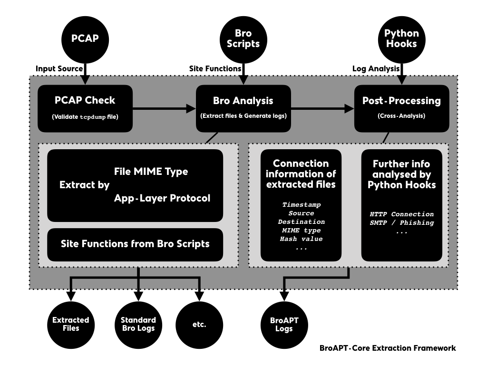

BroAPT-Core Extration Framework¶
The BroAPT-Core framework processes PCAP files, extracts files transferred through traffic contained in the PCAP files, and perform analysis to the log files generated by Bro scripts.
When the BroAPT-Core framework first reads in a new PCAP file, it will validate if it’s a valid
tcpdump(tcpdump(1)) format file, throughlibmagic(libmagic(3)).If validated, the BroAPT-Core framework will utilise the Bro IDS to perform analysis upon the PCAP file, extracting files and generating logs.
When extracting, you may toggle through environment variables to configure which MIME types and/or what application layer protocol files transferred with should be extracted.
Also, site functions from user-defined Bro scripts will be loaded and executed at the same time.
This step will produce extracted files and standard Bro logs, as well as extra artefacts elevated through the site functions.
Later, the BroAPT-Core framework will perform post-processing, a.k.a. cross-analysis, upon the logs generated in previous step.
By default, the BroAPT-Core framework will gather connection information of the extracted files from the Bro logs (
files.log). Some other analysis will also be performed as defined in the Python hooks.The result of analysis will be elevated as BroAPT logs.
Custom Bro Scripts¶
In the BroAPT system, you can customise your own Bro script. The BroAPT-Core framework will load those scripts when running Bro IDS to process PCAP files.
User defined Bro scripts will be mapped into the Docker container at runtime. The directory structure would be as following:
/broapt/scripts/
│ # load FileExtraction module
├── __load__.bro
│ # configurations
├── config.bro
│ # MIME-extension mappings
├── file-extensions.bro
│ # protocol hooks
├── hooks/
│ │ # extract DTLS
│ ├── extract-dtls.bro
│ │ # extract FTP_DATA
│ ├── extract-ftp.bro
│ │ # extract HTTP
│ ├── extract-http.bro
│ │ # extract IRC_DATA
│ ├── extract-irc.bro
│ │ # extract SMTP
│ └── extract-smtp.bro
│ # core logic
├── main.bro
│ # MIME hooks
│── plugins/
│ │ # extract all files
│ ├── extract-all-files.bro
│ │ # extract APK
│ ├── extract-application-vnd-android-package-archive.bro
│ │ # extract PDF
│ ├── extract-application-pdf.bro
│ │ # extract PE
│ ├── extract-application-vnd-microsoft-portable-executable.bro
│ │ # extract by BRO_MIME
│ └── extract-white-list.bro
│ # site functions by user
└── sites/
│ # load site functions
├── __load__.bro
└── ...
where extract-application-vnd-android-package-archive.bro,
extract-application-pdf.bro and
extract-application-vnd-microsoft-portable-executable.bro are Bro scripts
generated automatically by the BroAPT-Core framework based on the
BROAPT_LOAD_MIME environment vairable.
Important
The BROAPT_LOAD_MIME supports UNIX shell-like pattern matching,
c.f. fnmatch module from Python.
And /broapt/scripts/sites/ are mapped from the host machine, which includes
the Bro scripts defined by user. You may include your scripts into the
BroAPT-Core framework by loading (@load) them in the
/broapt/scripts/sites/__load__.bro file.
At the moment, we have six sets of Bro scripts included in the distribution.
Common Constants¶
In the BroAPT system, it predefines many constants of common protocols and
systems, such as FTP commands, HTTP methods, etc. We used crawlers to fetch
relevant data from the IANA registry, generate and/or update Bro constants,
such as HTTP::header_names for HTTP headers fields.
Unknown HTTP Headers¶
As defined in RFC 2616 and RFC 7230, and registered in IANA, there’re a
list of known HTTP headers. However, customised headers may be introduced when
implementation. Such unknown headers may contain significant information about
the HTTP traffic. Therefore, the script utilised http_header event and
search for unknown headers, i.e. not included in HTTP::header_names, then
record them in the http.log files.
HTTP POST Data¶
As RFC 2616 suggests, we can utilise the data sent from POST command
to analyse information about outbound traffic. The script utilised
http_entity_data event, and save the POST data to http.log files.
Calculate Hash Values¶
Hash value of files can be used to detect malware. The script utilised
file_new event, calculated and saved the hash values of files transferred
in the files.log file.
SMTP Phishing Detect¶
Since files transferred through SMTP traffic are not easy to gather and detect phishing information. We introduced two Bro modules to perform such detection on the SMTP traffic.
A. Phishing Module¶
The Phishing module mainly provides mass scam emails; phishing email detection
based on Levenshtein distance of sender address. It will elevate a
phishing_link.log log file, containing such malicious connections and URLs.
B. Phish Module¶
Primary scope of these bro policies is to give more insights into smtp-analysis esp to track phishing events.
This is a subset of phish-analysis repo and doesn’t use any backed postgres
database. So relieves the user from postgres dependency while getting
basic phishing detection up and running very quickly.
Custom Python Hooks¶
In the BroAPT system, you can customise your own Python hooks for cross-analysis to the log files. The BroAPT-Core framework will call such registered hooks on each set of log files generacted from a PCAP file after processing of Bro.
See also
Log analysis and generation can be done through the ZLogging project, which provides both loading and dumping interface to the processing of Bro logs in an elegant Pythonic way.
User defined Bro scripts will be mapped into the Docker container at runtime. The directory structure would be as following:
/broapt/python/
│ # setup PYTHONPATH
├── __init__.py
│ # entry point
├── __main__.py
│ # config parser
├── cfgparser.py
│ # Bro script composer
├── compose.py
│ # global constants
├── const.py
│ # Bro log parser
├── logparser.py
│ # BroAPT-Core logic
├── process.py
│ # multiprocessing support
├── remote.py
│ # BroAPT-App logic
├── scan.py
│ # Python hooks
├── sites
│ │ # register hooks
│ ├── __init__.py
│ └── ...
│ # utility functions
└── utils.py
where /broapt/python/sites/ is mapped from the host machine, which includes
user-defined site customisation Python hooks.
You can register your own hooks in the /broapt/python/sites/__init__.py,
by importing (import) them and add them to the HOOK and/or EXIT
registry lists.
In the HOOK registry, each registered hook function will be called after
a PCAP file is processed by the Bro IDS, and perform analysis on the logs
generated from the PCAP file.
Note
The hook function will be called with ONE argument, log_name, a
string (str) representing the folder name to the target logs.
In the EXIT registry, each registered hook function will be called before
the main process of the BroAPT-Core framework exits.
Note
The hook function will be called with NO argument.
At the moment, we have bundled two sets of Python hooks in the system.
Extracted File Information¶
Through conn.log and files.log, the BroAPT system generates a new
log file for information of extracted files, which includes the timestamp,
source and destination IP addresses of the transport layer connection
(TCP/UDP) transferring the file, MIME type of the file, as well as hash
values, see below:
Field Name |
Bro Type |
Description |
|---|---|---|
|
|
Connection timestamp |
|
|
UUID of source logs |
|
|
Absolute path to source logs (in Docker container) |
|
|
Relative path to source logs |
|
|
Absolute path to extracted file (in Docker container) |
|
|
Relative path to extracted file |
|
|
Original filename (if present) |
|
|
Transferrer and receiver |
|
|
Source and destination IP addresses and ports |
|
|
MIME type probed by Bro IDS |
|
|
MIME type detected by |
|
|
Hash values (MD5, SHA1 and SHA256) |
The equivalent ZLogging data model can be declared as following:
class ExtractedFiles(Model):
timestamp = FloatType()
log_uuid = StringType()
log_path = StringType()
dump_path = StringType()
local_name = StringType()
source_name = StringType()
hosts = VectorType(element_type=RecordType(
tx=AddrType(),
rx=AddrType(),
))
conns = VectorType(element_type=RecordType(
src_h=AddrType(),
src_p=PortType(),
dst_h=AddrType(),
dst_p=PortType(),
))
bro_mime_type = StringType()
real_mime_type = StringType()
hash = RecordType(
md5=StringType(),
sha1=StringType(),
sha256=StringType(),
)
HTTP Connection Information¶
Through analysis upon http.log, the BroAPT system elevated a new log file with
more concentrated information about HTTP connections. Such log file contains all
HTTP connections from every processed PCAP file, and can be used for further analysis
based on big data.
Field Name |
Bro Type |
Description |
|---|---|---|
|
|
Client IP address |
|
|
Request timestamp (microseconds) |
|
|
Requests URL path |
|
|
|
|
|
|
|
|
Server IP address |
|
|
|
|
|
Client port |
|
|
Unregistered HTTP header fields (JSON encoded) |
|
|
HTTP method |
|
|
|
The equivalent ZLogging data model can be declared as following (with type annotations):
class HTTPConnections(Model):
srcip: bro_addr
ts: bro_float
url: bro_string
ref: bro_string
ua: bro_string
dstip: bro_addr
cookie: bro_string
src_port: bro_port
json: bro_vector[bro_string]
method: bro_string
body: bro_string